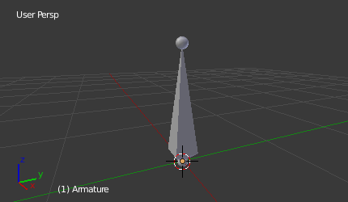

简介¶
Blender 中的骨架类似于真实的骨架，就如一个真实的骨架那样，骨架是由许多骨骼组成。这些骨骼可以四处移动，并且它们附着的或相关联的任何东西都将以类似的方式移动和变形。
"骨架(armature)"是用于 绑定 的物体类型。绑定是木偶（傀儡）的控制器和牵线。骨架物体借鉴了真实骨架的许多特点。
Your First Armature¶
为了看看我们在谈论什么，让我们尝试在Blender中添加默认的骨架。
(需要注意的是骨架的编辑细节说明在 armatures editing section 骨架的编辑章节部分）。
打开默认的场景, 然后：
- 删除场景中的所有物体。
- 按下键盘
Shift-C确保游标（cursor ）在世界的原点。 - 按数字键盘上的
Numpad1键切换到前视图。 - 添加一个 骨骼 ().
- 按
NumpadDelete视图最大化查看骨架。

默认的骨架。
The Armature Object 骨架物体¶
正如你所看到的, 骨架物体像Blender 的其它物体类型:
- 它有一个中心,位置、 旋转、缩放属性。
- 有物体数据块, 所以能够在 编辑模式（Edit mode ） 中被编辑.
- 它可以被连结到其它场景, 同样的骨架数据可以被多个物体使用。
- 在 物体模式（Object mode） 下所有的动画仅仅工作在整个物体的,而不是骨架的骨骼 (在 姿势模式下（Pose mode） 可以做到这点)。
骨架是为姿势设计的, 无论是静态或动态场景, 它们有一个特别的姿态叫 “重置位置（rest position）”. 这个骨骼有默认的“形状”, 默认的位置/旋转/缩放, 在 编辑模式 可以设置改变它们。
在 编辑模式（Edit mode）， 你总是看到骨架在重置位置（rest position）, 而在 对象Object 和 姿势Pose模式, 你通常得到当前的骨架“姿势”(除非你启用了 骨架（Armature） 面板的 重置位置（rest position） 按钮)。
Armature chapter overview 骨架章节概述¶
在"Armatures"章节，我们仅仅谈论骨架本身, 特别的我们将说说：
- 骨骼（ bones ）的基本知识。
- 骨架的不同显示模式（ armature visualizations ）。
- 骨架的结构类型（ structure types ）。
- 怎么选择骨骼（ Select Bones ）,
- 怎么样编辑骨架（ Edit Armatures ）,
- 怎么样编辑骨骼（ Edit Bones ）,
- 怎么样编辑骨骼属性( edit bones properties ),
- 怎么样使用Etch-a-Ton 工具( Etch-a-Ton tool ) 绘制骨架,
- 怎么样使用模板( templates )。